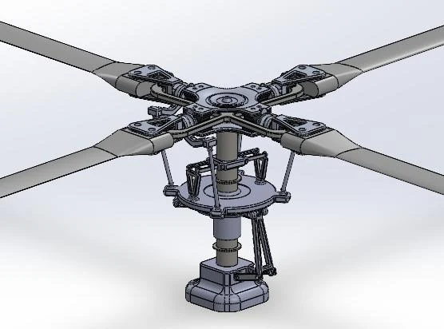
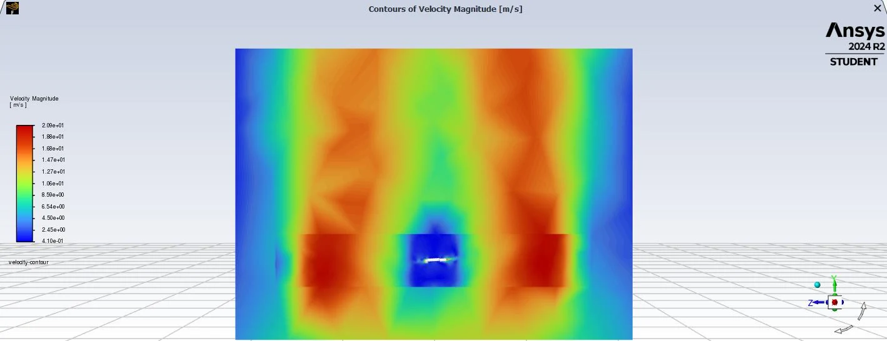
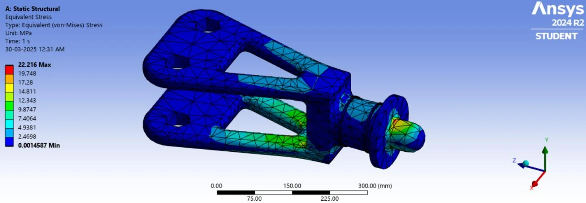
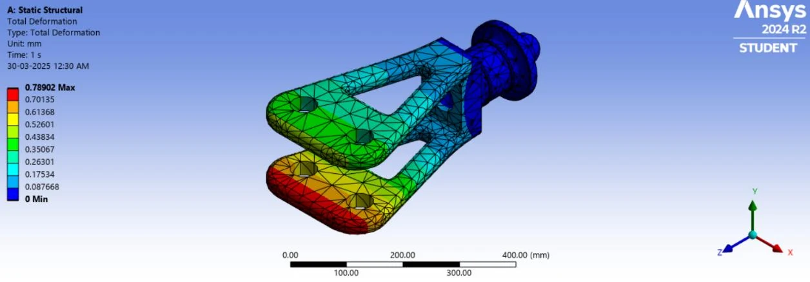

Bell-407 Helicopter Rotor and Blade System
Connecting blade aerodynamics with rotor-component analysis.
A comparative CFD study of two blade profiles, supported by CAD assembly work and static structural analysis of rotor components.
- Context
- Mechanical Engineering academic project, December 2024–April 2025
- My role
- CFD and Structural Analysis Lead Engineer, academic project
- Tools
- SolidWorks, ANSYS Fluent, ANSYS Structural

The problem
Rotor-system design involves interactions between geometry, aerodynamic loading, material selection, and structural response. The project examined these relationships through a comparative study of NACA-0012 and SC-1095 blade profiles and static analysis of rotor components.
My contribution
I led the CFD and structural-analysis work within the academic project. My focus was evaluating aerodynamic behavior and interpreting component stress and deformation under the modeled load cases. The broader workflow connected SolidWorks geometry and assembly modeling with ANSYS simulation.
Analysis workflow
- Model blade profiles and rotor components in CAD.
- Compare the NACA-0012 and SC-1095 profiles in ANSYS Fluent.
- Evaluate stress and deformation in rotor components using static structural analysis.
- Interpret the results with reference to the modeled loads, component materials, and study assumptions.
The assembly work included the blade holder, rotor mast, upper and lower plates, swashplate, pitch-control elements, and associated connections. The report’s structural-analysis scope excluded the blades themselves.
Simulation evidence






| Component | Reported maximum stress | Reported deformation |
|---|---|---|
| Blade holder | 22.216 MPa | 0.789 mm |
| Upper and lower plates | 5.1977 MPa | 0.09 mm |
| Rotor mast | 7.3688 MPa | 0.297 mm |
These values describe different components and load cases. They are not a ranking of component safety, a material-life prediction, or a comparison of before-and-after designs.
What the study contributed
The work produced a CAD assembly, aerodynamic comparison figures, and structural result plots that connect system geometry to local component behavior. It strengthened my ability to communicate how analysis assumptions influence engineering conclusions.
Scope note
This is an academic simulation study, not flight certification or experimental proof of aircraft performance. It evaluates static component response; it does not establish fatigue life or coupled fluid–structure interaction.